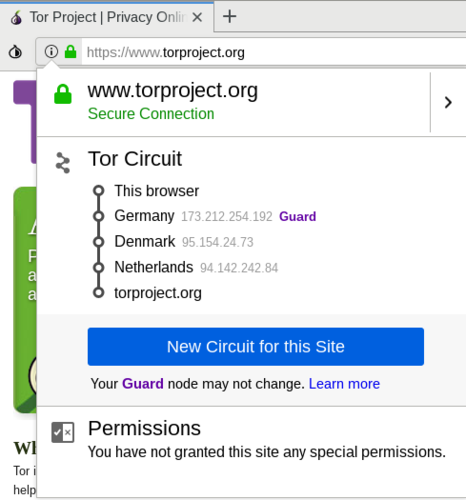
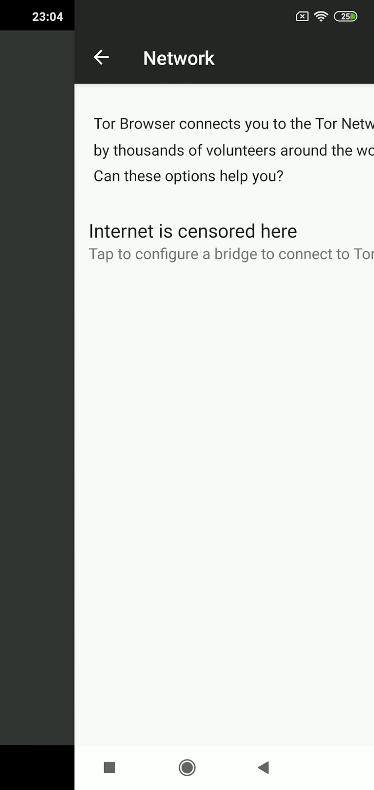
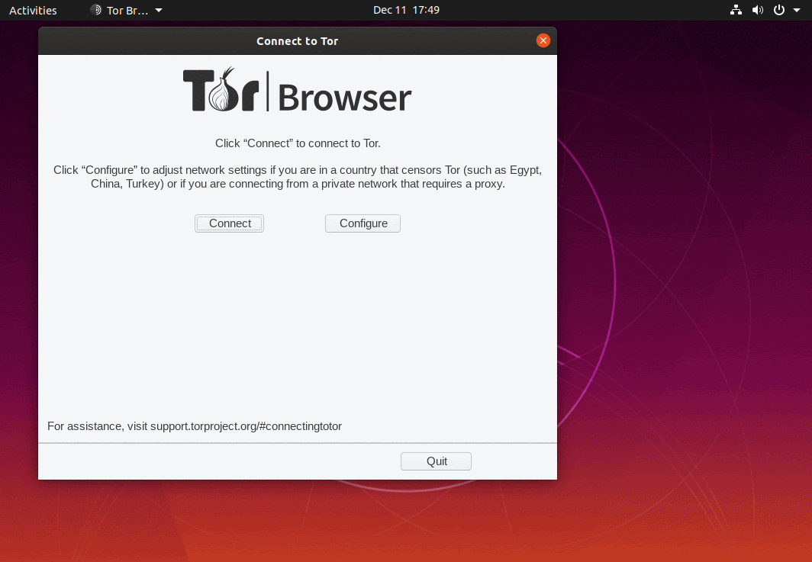
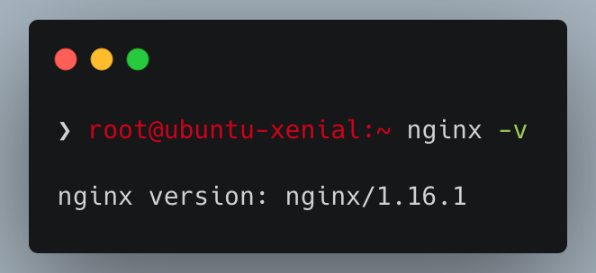
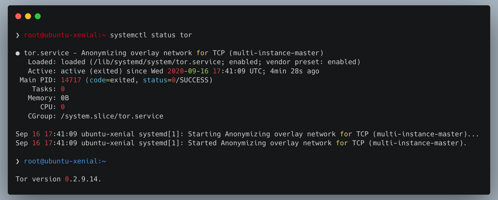
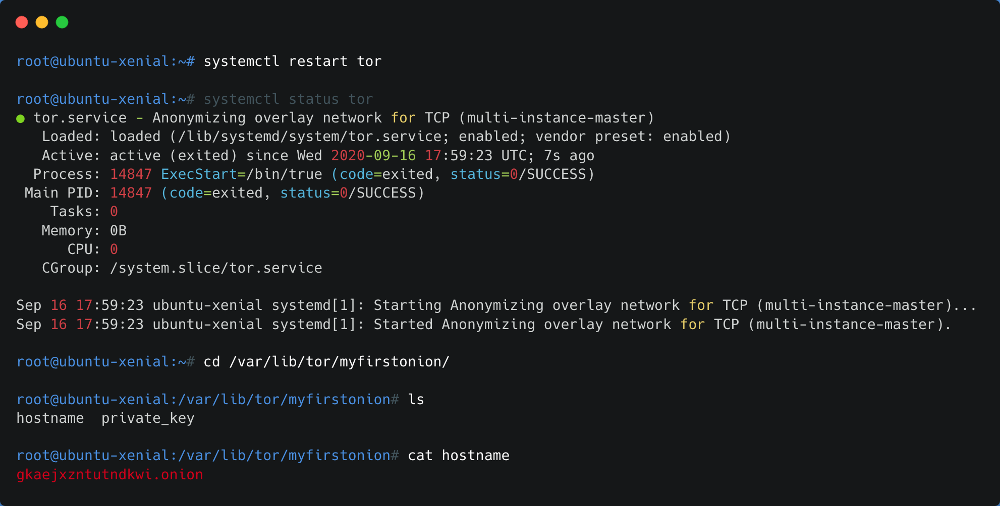

1 - Intro to Tor
Introduction to Tor network
Required expertise level : Beginner / Intermediate
Platform : Gnu/Linux | macOS | MS Windows | Android | BSD
Last tested and confirmed : March 2022
This guide is an updated version of this article, published by MadaMasr - An Egyptian independent media organization - in the context of releasing their own Onion mirror.
What is Tor?
Tor
is the acronym for the original project that produced The Onion Router protocol, which protects the identity of internet users. It’s one of several technologies that have become widely used to roam the web freely and securely.
The project began in the mid-1990s and has gone through several phases. It is now administered by a not-for-profit organization, supervised by a community of its users and developers.
All Tor software is developed under open-source licenses and is publicly available for anyone to view and collaborate in improving.
How does Tor work?
Let’s imagine the journey of a data packet between a user and a server (i.e. a website), both connected to the internet. With a regular connection, the data packet moves from the user’s device through the local router and then to the servers of the Internet Server Provider (ISP). If the ISP’s servers allow the packet to pass, it will reach its destination, hassle-free.
But what if you don’t want anyone to access your data packet, its destination or its content? Or to be able to block its journey?
Onion routing
allows your packet to take a different, more secure route to reach its final destination.
Your Tor client will choose a group of random nodes for the packet to move through until it reaches its final destination. It will then generate a set of keys on your computer, which are used to encrypt the data packet as many times as the number of nodes it will pass through in its journey before reaching the final exit node.

The encryption protocol allows each node the packet is passing through to decrypt just one layer of the encryption to get information about the next node the packet will pass through.
The aim of the onion routing protocol is for your packet to pass through a series of random nodes before reaching its final destination, with each node only receiving information about the nodes that directly proceed and follow it.
None of the nodes — except for the last one — can access information about the data packet’s final destination or see what’s inside it. The final exit node decrypts the final layer and directs the packet to its intended destination on the internet.
Who runs Tor?
The organization
operates several machines that serve as nodes on its network. Volunteers run thousands more nodes — all under the community’s supervision — to ensure data security.
Anyone can volunteer to host a node in the network given that they have the necessary technical capabilities and internet speed.
Neither the community nor the organization has the right or the ability to interfere with the encryption protocol because the encryption keys of each user are stored on their respective devices.
Data packets are therefore completely encrypted within the Tor network.
What’s the difference between using Tor and using a Virtual Private Network (VPN)?
VPN is the name given to different protocols and mechanisms that route the connection of one or more machines to a virtual network through which they can access the internet.
To do so, the VPN client creates an encrypted connection to the server of the virtual private network, which acts like a tunnel transferring data from the machine to the server before it reaches the internet. When the data gets to its final destination, it appears as if it were sent from the server of the virtual network.
VPN theoretically helps protect users’ anonymity as it hides their geographical locations and identities from the servers at the receiving end. Yet while VPN provides some privacy besides enabling users to access blocked websites, it doesn’t provide watertight protection.
Network admins can collect users’ data after decrypting them. Data can also be manipulated if users connect to websites and services that don’t use secure protocols, such as HTTPS.
It’s also not advisable to use free VPN services, as many such services make money by collecting and selling user data. Others inadvertently transfer adware and, sometimes, malware from unprotected websites while browsing.
These are the main differences between using the Tor network and VPN services. Whether paid or free, VPN providers generally seek profit, and there isn’t a practical method to verify their user data security policies. Tor, on the other hand, is subject to clear transparency rules and the supervision of both developers and users.
Additionally, it’s easy to block access to VPN service providers, either through tracking their respective routing protocols or intercepting connections. Authorities can also directly block VPN servers and websites, as is the case with some countries.
What’s the difference between Onion Services and the normal web - Clearnet?
We’ve explained how Tor network operates by describing the journey of a data packet through the nodes until it reaches the exit node and then its destination on the internet.
But what if the packet never leaves Tor network?
Onion services are used to grant access to servers operating completely within the Tor network that are only accessible using the onion routing protocol. These services can be accessed through randomly generated addresses (most of the time) ending with the special-use top-level domain suffix “.onion” (as opposed to the more common .com or .org).
What this technique provides is a routing protocol between the user and the server so that neither has any information about the other.
Under optimum conditions in which all preferences are properly set by both parties, it is not possible to trace the server operating on Tor network, nor can the website’s admin collect any data that would reveal a user’s identity — barring, of course, a mistake or voluntary release of such information.
Tor Browser
You can reach Tor Browser and download the installer for your respective operating system using the following links
Other mirrors
Tor Project also provides another method to download its browser. Just send an email to gettor@torproject.org including the name of your operating system (Windows, OSX, Linux). You will receive a message containing links to download the browser via Google Drive and Dropbox, which aren’t blocked.
Tor Browser for Android is also available on the Google Play Store
You can also use Tor network’s proxy app
Orbot, which provides a similar service to VPNs. Orbot redirects the data from all the apps on your phone to go through Tor network. This can help override blocks placed on apps such as Signal and Wire, among others.

There isn’t an official version of Tor Browser for iPhone and iPad users because of the restrictions Apple places on apps. However, every now and then, independent developers come up with alternative browsers to access Tor network such as OnionBrowser.
These browsers, however, don’t ensure the anonymity of users accessing content outside the Tor network.
When Tor is blocked, activate bridges
Connection to Tor network usually gets restricted through blocking or jamming entry nodes because the addresses of most VPNs, as well as the protocols of nodes and relays, are openly available on the internet.
What makes fully blocking Tor network such a difficult task is that there are many ways to connect to it. One such way is by using bridges.
In a nutshell, bridges are servers run by volunteers whose addresses aren’t usually published openly. Bridges work as an intermediary between users and Tor network and help bypass blocks while hiding the connection from any party trying to analyze the network’s data.
Activating Bridges
Tor browser on Android phones

Tor’s Android client, Orbot

Tor browser on Desktop devices

Websites that can be accessed through .onion services
3 - Static Onion
Create Onion Service for your Static mirror
Required expertise level : Advanced
Platform : Linux / Ubuntu - Debian
Last tested and confirmed : March 2022
This guide will walk you through the process of creating Onion Service for you static website.
Note
This guide focuses on creating a simple Onion service mainly in the context of censorship circumvention, if you are more concerned with the anonymity Tor provides in Onion services you should not depend on this guide alone, reading and understanding
Tor project documentations will best practice in that case,
as a ensuring full anonymity is an advanced and very details oriented process.
Run the following commands in your terminal in their respective order
sudo apt install software-properties-common
sudo add-apt-repository ppa:nginx/stable
sudo apt update && sudo apt install nginx -y

Confirm your installation by entering nginx -v, the output should look similar to this
Note
If Tor Project Website and Tor communications are blocked in your country, probably the official
software repositories are also blocked, in which case you should skip adding them and install Tor directly from
your distribution’s repositories.
Add in the following lines in /etc/apt/sources.list
deb https://deb.torproject.org/torproject.org stretch main
deb-src https://deb.torproject.org/torproject.org stretch main
Run the following commands in your terminal in their respective order
curl https://deb.torproject.org/torproject.org/A3C4F0F979CAA22CDBA8F512EE8CBC9E886DDD89.asc | gpg --import
gpg --export A3C4F0F979CAA22CDBA8F512EE8CBC9E886DDD89 | sudo apt-key add -
sudo apt update && apt install tor deb.torproject.org-keyring
sudo apt update && sudo apt install tor
Run the following commands to start Tor daemon
sudo systemctl start tor
sudo systemctl enable tor
Confirm Tor is running without issues
sudo systemctl status tor
tor --version

Open Tor config file at /etc/tor/torrc with your favorite editor
vim /etc/tor/torrc
Uncomment the following lines by removing the #, and optionally, replace the directory name in /var/lib/tor/hidden_service/ with different name, specially if you are planning on hosting multiple Onion Services on the same server. i.e. /var/lib/tor/myfirstonion/
72 #HiddenServiceDir /var/lib/tor/hidden_service/
73 #HiddenServicePort 80 127.0.0.1:80
HiddenServiceDir /var/lib/tor/myfirstonion/
HiddenServicePort 80 127.0.0.1:80
Restart Tor service
sudo systemctl restart tor
Confirm your Onion Service related files were generated at /var/lib/tor/myfirstonion/
cd /var/lib/tor/myfirstonion/ && ls
You should find two files generated at this directory
1- hostname contains your Onion Service address
2- private_key Private key used for encryption. Don’t edit or share this file under any circumstances

- Configure Nginx Webserver
It’s very important to read Nginx documentations and follow the best practices when configuring your Onion Service
But essentially, you can get your Onion Service up & running by adding this simple config file to your /etc/nginx/sites-enabled
server {
listen 127.0.0.1:80;
server_name [onion-address]; #replace with your generated onion address, you can get that by executing : `cat /var/lib/[yourservicename]/hostname`
root /var/www/html/mystaticmirror; #replace with your mirror's files directory, and make sure the webserver user has access permissions to it.
client_max_body_size 99M;
port_in_redirect off;
charset utf-8;
index index.html;
location / {
autoindex off;
}
}
Make sure Both Nginx and Tor client are restarted and running succesfully, then head to your Tor Browser and test your new Onion address.
- [Optional] - announcing your new mirror for Tor browser users
Onion-Location is a new feature implemented in Tor Browser.
It essentially allows you to announce your Onion mirror for Tor Browser users when they access your original website, through adding an HTTP Header using your webserver, or adding specific HTML <meta> to your index.html page.
HTTP Header
<VirtualHost *:443>
ServerName <your-website.tld>
DocumentRoot /path/to/htdocs
Header set Onion-Location "http://your-onion-address.onion%{REQUEST_URI}s"
SSLEngine on
SSLCertificateFile "/path/to/www.example.com.cert"
SSLCertificateKeyFile "/path/to/www.example.com.key"
</VirtualHost>
add_header Onion-Location http://<your-onion-address>.onion$request_uri;
HTML <meta>
<meta http-equiv="onion-location" content="http://<your-onion-service-address>.onion" />
When everything is well configured and working, visitors of your original Clearnet website using Tor browser, should be notified about the availability of the Onion mirror and it’s address.